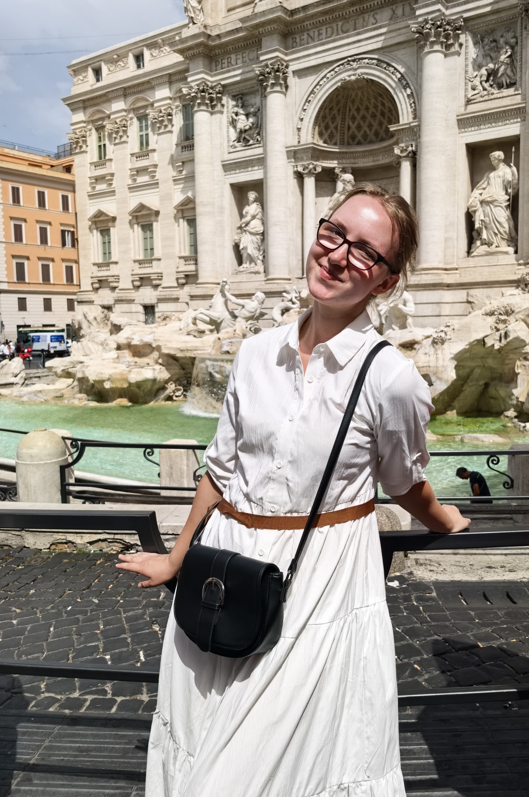

Первые шаги в вебе
Успешно освоила HTML и CSS, сверстала этот адаптивный сайт-визитку с нуля. В планах — активное изучение JavaScript.
ПодробнееВеб-разработчик в процессе · Фотограф
По соционике я — Дюма: ценю уют, гармонию и людей вокруг. А еще я пишу код на HTML, CSS, JS и ловлю моменты в объектив. Для меня веб-разработка и фотография — это два способа показать миру свою эстетику и сделать его немного лучше.

Успешно освоила HTML и CSS, сверстала этот адаптивный сайт-визитку с нуля. В планах — активное изучение JavaScript.
ПодробнееСделала серию атмосферных фотографий в Риме. Для меня фотография — это способ замедлиться и поймать идеальный свет.
ПодробнееУчусь сохранять баланс между учебой, кодом и личной жизнью. Придерживаюсь принципов ЗОЖ и нахожу вдохновение в простых вещах.
ПодробнееЭтот сайт — мой первый серьезный проект. Я изучила основы HTML5 и CSS3, научилась работать с блочной моделью, Flexbox, позиционированием и адаптивностью. В процессе я использовала семантические теги (<header>, <main>, <article>, <figure>) и создала плавные анимации появления элементов.
↑ Вернуться к достижениямФотография для меня — это не просто нажатие на кнопку. Это умение видеть композицию, свет и эмоции. Поездка в Италию дала мне огромный буст вдохновения. Я фотографировала архитектуру, людей и детали, чтобы сохранить атмосферу того лета. Несколько моих работ можно будет увидеть в отдельной галерее (в планах на будущее!).
↑ Вернуться к достижениямУчеба, программирование и творчество требуют много энергии. Чтобы не выгорать, я придерживаюсь принципов ЗОЖ: правильное питание, сон и спорт. А еще я ценю психологию. Понимание своего типа личности (Дюма) помогает мне находить общий язык с людьми и выстраивать комфортную атмосферу в команде.
↑ Вернуться к достижениямОткрыта к интересным проектам, стажировкам и просто теплому общению.
Telegram: @KKaterinnka GitHub